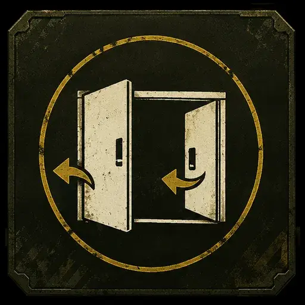

Mod
DualSideDoorBreach
- Downloads
- 2,176
- Favourites
- 32
- Mod lists
- 39
THE CITY doors have opinions. Hinge side only. Swing into your face. Locked for no reason. This mod disagrees.
Breach doors from either side and have them swing away from you instead of into your face. Works with the normal F-menu breach action and with DoorDash by tarkin sprint-ram breaching.
Vanilla only lets you breach from the hinge side and always kicks the door open in a fixed direction. This mod removes that restriction for normal doors while keeping vanilla behaviour for special one-way breach doors.
Features
- Dual-side breaching — breach operable doors from the front or back (F-menu and DoorDash)
- Smart swing direction — doors open away from the side you are breaching from
- One-way breach doors preserved — factory-style breach-only doors, still only work from the correct side
- Locked doors with keys — require the matching key in your inventory to breach locked doors, and consume a key charge on breach
- DoorDash compatible — optional compatibility patches
- Lightweight — logic only runs during door interaction, no map-wide scanning
Highly recommended mod
- DoorDash by tarkin allows sprint-ram breaching of doors

Installation
- As usual, unzip to your SPT directory
Configuration
| Setting | Section | Default | Description |
|---|---|---|---|
Enabled |
General | true |
Master toggle for dual-side breaching |
AdjustOpenDirection |
General | true |
Swing the door away from the breaching player |
AllowNonBreachableDoors |
General | true |
Also allow breaching doors flagged as non-breachable in map data |
RequireMatchingKey |
Locked Doors | true |
Locked doors need the matching key in your inventory to breach |
ConsumeKeyOnBreach |
Locked Doors | true |
Use one charge of the matching key when breaching a locked door |
DoorDash |
Compatibility | true |
Allow DoorDash sprint-ram from both sides (requires DoorDash) |
Potential quirks
- I’m pretty sure I’ve covered all edge cases, but if you encounter any doors that behave strangely, let me know.
- Depending on map layout, doors can clip through the walls if opened in the “unintended” direction.
Version
1.1.0
SPT ~4.0.4
Fika: compatible
928 downloads10.4 KB
- Added wrong-side resistance - increase the amount of kicks it takes to breach a door against its swing direction (default off)
- Added breach without key - key-locked doors can be breached without their key, chance increases on each failed attempt (default off)
- Added Fika support - important: install the mod on every machine, including the headless host
See full CHANGELOG.md
VirusTotal: report 1
Version
1.0.0
SPT ~4.0.4
Fika: incompatible
1,248 downloads9.3 KB
Initial Release
VirusTotal: report 1